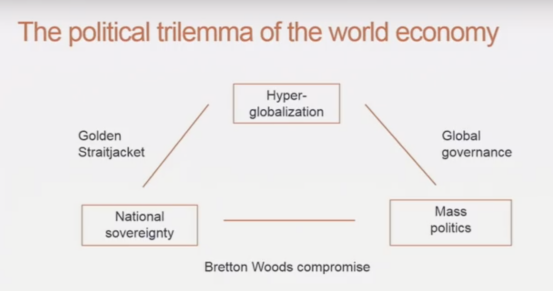

收录于合集

简 介
** 【作者】** 丹尼·罗德里克（Dani Rodrik）：哈佛大学肯尼迪政府学院国际政治经济学福特基金会教授，主要研究方向为经济增长和发展以及政治经济学。在《全球化悖论》一书中首次提出“超级全球化”的概念，他认为民族国家的运作与经济全球化间存在的冲突使得世界经济正朝着超级全球化的错误方向前进。
** **【 编译 】****柯孜凝
** **【 校对 】****冯毓婧
** **【 审核 】****王国欣 ** ******
** **【 来源 】****Rodrik, Dani. “Globalization’s Wrong Turn: And How It Hurt America.” Foreign Affairs 98 (2019): 26.
** 【期刊】** 《外交事务》（Foreign Affairs），由美国外交关系委员会(Council on Foreign Affairs)出版，成立于1922年。根据2014年的期刊引文报告,该期刊的影响因子为2.009，在“国际关系”类别的85种期刊中排名第6。
** 全球化的错误转向：** ** 全球化如何伤害美国**
** Globalization’s Wrong Turn: And How It Hurt America**
丹尼 ·罗德里克（Dani Rodrik）
内容提要
全球化当前正陷入麻烦之中：美国总统特朗普个人言行助推民粹主义势力高涨，中美贸易战的即将爆发以及欧洲国家向移民关闭过境通道。即便是全球化的最大支持者现如今也承认全球化本身带来了当前的不平等，因而世界需要对此作出改变。
作者认为当前全球化的困境源于20世纪90年代推行的超级全球化（Hyper
globalization）。在这一类似金本位制的模式下，各国国内经济主要为国际经济服务，压缩了国内政策空间。
通过对一战后实行过的国际经济模式进行历史梳理，本文作者在此基础上提出：我们应正视布雷顿森林体系运
转中的历史经验，各国政府应积极合作纠正超级全球化的错误趋势。
文章导读
作者认为当前的全球化正陷入困境中，而这一困境源于在国际经济中实行了超级全球化的模式。 具体而言，在贸易领域这种模式的实行以1995年世界贸易组织（WTO）的建立为标志。WTO的产生不仅使得国家更难从国际竞争中保护本国利益，而且扩展了更多之前未曾涉及过的国际贸易规则如农业，服务，知识产权等。在金融领域，这种模式使得资本由政府管控变为自由流通。由于美国和国际货币基金组织（IMF）的推动，大量国家为了获取高额回报开放了短期金融投资。 但作者在此指出，这些转变必须基于健全的经济基础之上， 如此，贸易开放才会使资源重新配置到最具生产力的部门，资本才会从富足的国家流向需要的地方，最终大量的贸易和金融开放将会释放私人投资并促进全球经济的增长。但作者认为开放也带来了一些风险，如与中国及其他低收入国家的贸易增加使得发达国家制造业就业率持续下降。
然而20世纪90年代的国际经济并不必然就会走向超级全球化的道路，因为在此之前曾存在过两种不同的全球化模式：金本位制（Gold Standard）和布雷顿森林体系(Bretton Woods System)。 作者认为这种新的超级全球化更接近金本位制，而这恰恰是当前许多问题的根源。布雷顿森林体系具有更为灵活的原则，因此作者认为今天的政策制定者如果要建立一个更公平，更可持续的全球经济体系，就需要从布雷顿森林体系之中汲取经验。
**1
**
黄金约束衣

图1 全球三重困境
一战来临的五十年前，国际经济依据金本位制运行。在金本位制下，政府需要依照黄金的价格估算本国货币的价值，并且需要保持开放的货币流通。由于黄金储备的有限，这一规则对国内收入和就业是致命打击，民粹主义运动随之而起。作者以美国为例分析了面对民粹主义时美国政府的可选择方案，即减轻贷款负担，将银也作为衡量货币价值的尺度。不过由于黄金的大量发现，美国得以坚持实行金本位制。但英国就没有那么幸运了，商人和工人们要求降低利率，而这一要求在金本位制下将会导致资本外流。彼时的英国政府选择维护国内经济，最终于1931年宣布废止金本位制。
金本位制启发了战后经济体系的设计师凯恩斯，他从实行金本位制的历史中得出结论：收紧国内经济并以此推进国际贸易和投资将会使得国际经济体系变得更加脆弱。 据此，1944年建立了布雷顿森林体系。布雷顿森林体系的建立给予政府足够多的空间去制定货币或金融政策。这一体系的关键在于控制国际资本的流动。正如凯恩斯所强调的：资本管控不应该只是战后维持市场稳定的暂时手段，而应该是永久的经济管理方式，各国政府应被准许拥有国内经济发展的自主权。作者强调一国市场的开放程度取决于开放在多大程度上不危及本国的社会政治利益。
与金本位制和超级全球化相比，布雷顿森林体系和关税及贸易总协定给予了各国参与国际经济的选择自由。国内经济自主性的增加相应地会降低全球化的水平，但是在布雷顿森林体系时期，全球经济持续增长，无论是发达国家还是发展中国家都获得了史无前例的增长。贸易和海外直接投资快速扩张，超越了世界GDP的增速。出口在全球产量中的份额由1945年的5%翻了3倍，1981年达到了16%。这些数据都证明凯恩斯关于世界经济的观点是可靠的，即世界经济在政府管好本国经济和社会时运转得最好。
**2
**
**
重回金本位
**
如果仅停留在浅层次合作的布雷顿森林体系都能使得世界贸易、投资大幅提高，那么深层次的一体化合作又将取得多大的成就？尽管人们吸取了金本位制下的历史教训，但在构建新国际经济体制的过程中，布雷顿森林体系运行时的历史教训被抛在了脑后，也就是说全球化成为了目标，民族经济变成了实现它的手段。经济学家和政策制定者们都从国际市场的角度考虑国内经济。国内经济规则要么隐藏了贸易壁垒，需要通过贸易协定谈判去除，要么成为具有贸易竞争的潜在资源。金融市场的自信变成了衡量货币或财政政策成功与否的最高标准。
90年代的经济学家对于全球化作为经济增长的引擎充满自信。通过鼓励出口和吸引投资将会获得大量经济回报，这使得每个人都能分一杯羹。这一共识的目的在于合法化和加强全球合作的权力。
超级全球化必胜主义相信走不同经济和社会路径的国家终会融合，即便认同上不会融合，也会在市场经济路径上成为一体。西方认为中国加入世界贸易组织正预示着中国将会放弃对经济的直接管控。中国政府则认为没有理由偏离管控经济的道路，因为这一道路给中国带来了40年的经济发展奇迹。西方投资者因此指责中方违反了世贸组织的原则和宗旨。 然而作者认为，撇开法律上的是非曲直，这一矛盾背后更深层次的问题是新的贸易机制不能够适应世界经济体的体制多样性。
**3
**
更加健全的全球化
政策制定者们无论如何都无法再复制出一模一样的布雷顿森林体系，世界也不能和不应该回到固定汇率制、资本管控无所不在以及贸易保护主义极高的年代。但是政策制定者们却可以从过去的经验中学到如何去构建一个全新的、更健全的全球化体系。
政治家们应该为了重振多边贸易机制而努力。 要做到这一点并不是要进一步开放市场、收紧全球贸易和投资，而是构建一种新的国际规则，以此扩张政府实现国内目标的空间。
具体而言，对发达国家来说，就是要有一种规则重建国内的社会契约，而这一套规则允许国家暂时地保护敏感行业不受国际竞争的威胁。 WTO也应该让政府对社会倾销作出回应。反社会倾销规则可以保护一国的产业利润和人力资源等。 对于发展中国家来说，国际规则需要适应政府推动经济增长的目标。 WTO应该在补贴、投资和知识产权保护等方面放松对发展中国家的规则束缚，因为这些方面都将是刺激发展中国家产业发展的因素。
基于此，作者认为要解决中美贸易争端就需要中美承认他们在经济上不会被消除的差异。中国的经济奇迹建立在与超级全球化信条相悖的工业和金融政策之上，即产业补贴，中外合资，国企管理，货币管控。而目前中国政府并不打算抛弃这一政策。美国所抱怨的知识产权问题早在19世纪美国追赶英国时也曾出现。中国目前需要明确的是美国和欧洲国家都有合法的原因保护他们的社会契约和本土技术不受中国的影响。
在国际金融领域，各国需要恢复由国内政府控制跨国流动的资本。 这条规则意味着各国需要优先考虑国内宏观经济政策，税率体系，以及金融规范，其后才是资本流动。
全球化势必会产生赢家和输家。作者认为新的全球化最重要的准则在于改变的规则应该使所有人获益而不仅仅一小部分人。 经济学理论建议加大对输者的经济补偿，各国应着重开放跨国劳工的流动自由，因为劳动力市场是深化全球化的最强有力的方面。
总体上看， 全球治理应该是灵活的，各国政府能够选择自己的管理方式。 国家之所以进行贸易的原因不在于给予他国利益，而在于贸易能产生国内收益。当这些收益能够由国内经济公平地分配时，各国就不需要外部规则强制开放，它们会根据自己的需求进行选择。
国家只有在需要解决 ” 以邻为壑 ” 问题时才会通过国际协定限制一国国内政策，如在税收方面合作，防止经济卡特尔等。 但作者认为现行的国际规则试图控制一些非“以邻为壑”的经济政策，如农业补贴，过度松懈的金融规则。所有这些政策极其可能损害其他国家的利益，同时本国经济将会承担这些经济成本。政府实行这些政策仅仅因为他们认为由之所得的社会和政治利益值得这样去做，但在许多个案中，这种做法是得不偿失的。然而作者认为国际机制并不太可能判断出这些得失，因为他们的决策缺乏民主合法性。
20世纪90年代起对超级全球主义的推动导致了更大程度上的国际经济一体化，与此同时，它也加剧了国内经济的离心化趋势，因为专业技术部门、公司和金融精英都与其全球合作伙伴相互联系，而与国内同胞越走越远。今日的民粹主义冲击就是此分裂的一个显现。
国内经济和政治体系的修正需要花费大量精力。消除由于超级全球化带来的经济和社会鸿沟需要各国从国内层面上给予其高度政策支持，并减少国际上的影响。全球经济能对此作出的最大贡献就在于为修正过往的错误提供良好的环境，避免掣肘。
**
**
_ ** _ ** _ ** _ 本文由国际学人编辑推荐**__
往期阅读
【重磅速递】约瑟夫·奈：美国霸权的兴衰：从威尔逊到特朗普 | 国政学人
【重磅推荐】巴里·布赞：英国学派视角下的中国崛起 | 国政学人
【重磅速递】米尔斯海默：注定失败：自由主义国际秩序的兴衰 | 国政学人
【IPE重磅】罗伯特·基欧汉：国际政治经济学的新与旧 ｜国政学人
【百年国关】历史在国际社会中的应用：从巴黎和会到现在 | 国政学人
【国际组织】IO杂志：联合国维和行动的武力运用问题研究 | 国政学人
【国际秩序】为什么自由主义国际秩序理念将美国外交政策引入歧途？| 国政学人
【关系理论】“关系”：世界政治关系理论的中国话语 | 国政学人
【英国学派】张勇进：中国与全球国际社会中的自由主义等级制：实力与对规范变迁的协商 | 国政学人
【地区秩序】论经济实力的可转化性：中国经济崛起与东亚安全秩序 | 国政学人
【中俄关系】不得已的伙伴：系统-单元动态与中俄关系 | 国政学人
【IPE研究】美国对外贸易政策的“1934年体制”是如何形成的？| 国政学人
【现实主义】斯蒂芬·沃尔特：傲慢的终结与美国克制的新时代 | 国政学人
【理论批判】系统、层次与结构理论：沃尔兹的理论并非系统理论 | 国政学人
【外交政策】单极体系下的不和平状态与美国外交政策 | 国政学人
【欧洲研究】资本主义多样性与合规：加入欧盟后中东欧的经济改革 | 国政学人
【理论研究】吴建树：权力、道德、均势、联盟与摩根索——汉斯·摩根索的经典现实主义思想再解读
【友谊国关】将友谊重新引入国际关系：从中国到西方的关系本体论
【定量研究】政党实力和经济增长（Party Strength and Economic Growth）| 国政学人
【台湾学者】向骏：美国从“霸权稳定”到“霸凌不稳定” | 国政学人
【理论研究】巴里·布赞等：重思日本：主流国际关系理论的偏见 | 国政学人
【南亚研究】南亚对冲：中印竞争中经济和安全利益的平衡 | 国政学人
【外交政策】美国霸权的自我毁灭：华盛顿浪费了单极时代 | 国政学人
【定量研究】谁在欧洲议会中领导委员会？ ——基于2014年欧洲议会选举的研究 | 国政学人
【定量研究】暴露于难民危机之中会让当地人更有敌意吗？| 国政学人
【恐怖主义】恐怖主义组织扩展数据（EDTG）的介绍——从1970年到2016年 | 国政学人
【定量研究】赞助、信任和国家能力：庇护主义的历史轨迹 | 国政学人
【伊朗研究】比较伊朗伊斯兰革命前后威权政体的本质和领导能力 | 国政学人
【东亚研究】东亚的重叠式区域主义：决定因素和潜在影响 | 国政学人
【战争研究】不确定的战争：克劳塞维茨在全球时代仍适用吗？｜国政学人
【历史类比】克服西方历史想象的贫困：理解中国南海冲突的其他历史类比案例 | 国政学人
【区域重磅】阿米塔·阿查亚：重塑东南亚研究：自我怀疑、渴望和对比较的承诺 | 国政学人
【安全研究】打击军事力量的新时代：科技变化与核威慑的未来 ｜国政学人
【理论研究】砝码国家何以自抬身价？——两极格局下同盟政治中的“科林斯难题”研究
【中东研究】国际误识：以色列公共外交中的幽默政治和国家认同 | 国政学人
【IPE研究】公平贸易运动对内嵌自由主义的挑战 | 国政学人
【社群冲突】非洲农村社群冲突分析：剩男与一夫多妻的邻族 | 国政学人
【安全研究】核机会主义：一种在国际政治中国家如何使用核武器的理论 ｜国政学人
【方法研究】我们应该在多大程度上信任乘积交互模型？改进实证研究的简单工具 | 国政学人
【国际格局】查尔斯·格拉泽：为何单极格局并非如此重要？| 国政学人
【巴以问题】为合法性而“战”：以加沙船队为例的行事竞争 ｜国政学人
【中国外交】IS杂志：声誉、决心与中国在南海争端中强制手段的运用丨国政学人
【安全研究】IS杂志：相互依赖的武器化：论全球经济网络对国家强制权力的塑造作用 | 国政学人
【冲突研究】反政府组织资金与儿童士兵：探索自然资源与强行征募的关系 | 国政学人
【全球治理】罗伯特·基欧汉：气候变化机制复合体 | 国政学人
【欧洲研究】欧债危机到申根区危机：一体化理论、政治化和身份政治 | 国政学人
【冲突研究】科技，战争和国家：过去，现在与未来 | 国政学人
【理论研究】促进国际关系理论中的自由：以安·兰德为例丨国政学人